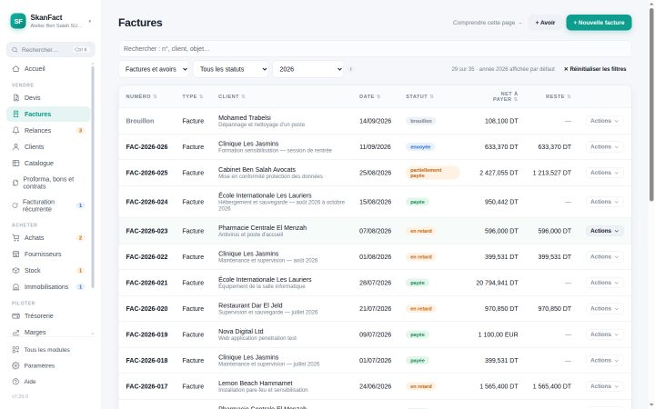
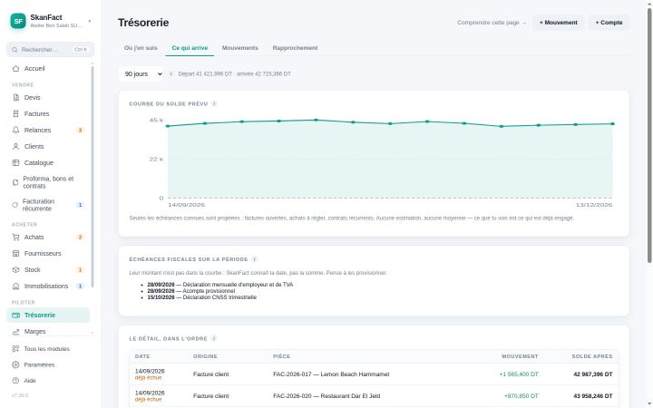
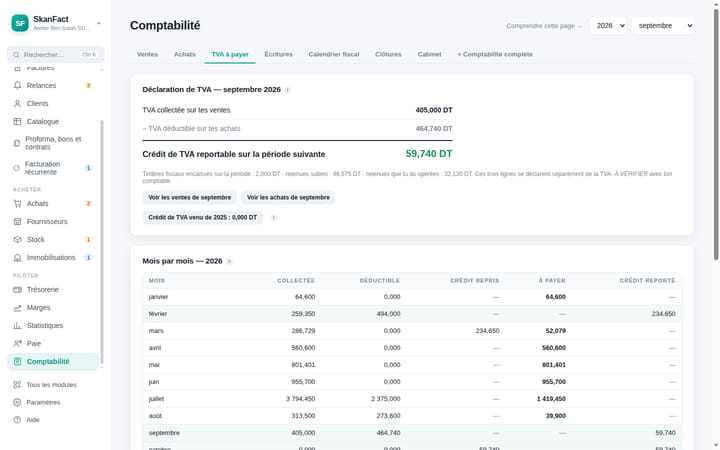
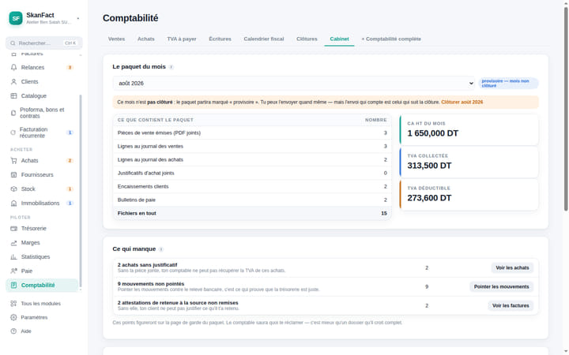

Facturez en règle, dès votre première facture.
Le timbre fiscal, les quatre taux de TVA et la retenue à la source sont déjà dedans. Vous saisissez, SkanFact calcule — et vous explique chaque champ au passage.
Mac et Windows · aucun compte à créer · vos données restent chez vous

Certains clients gardent une partie de votre facture et la versent au fisc à votre place. Cochez la case, le montant se calcule.
Le tour du propriétaire
Quatre choses que SkanFact fait pour vous.
Chacune a sa page : vous n'êtes pas obligé de tout lire pour savoir si l'application répond à votre question.

Le devis se transforme en facture d'un clic. Les statuts « payée », « partielle », « en retard » se déduisent des règlements : vous n'avez rien à cocher.

Ce que vous achetez, ce qu'il vous reste sur l'étagère, ce que vous gagnez vraiment, et le jour où le solde passe sous zéro.

Timbre fiscal, TVA à quatre taux avec report de crédit, retenue à la source, échéances : appliqués, et expliqués au moment où ils servent.

À la fin du mois, un bouton lui envoie tout : PDF, journaux, écritures. Son application est gratuite et sans limite de dossiers.
Le premier jour
Vous n'avez pas besoin de savoir pour commencer.
Un assistant pose les questions dans l'ordre, propose le catalogue de votre métier et le régime fiscal qui va avec. Vous pouvez tout changer ensuite.
- 1Votre société
Nom, matricule fiscal, activité. Cinq écrans.
- 2Votre métier
Il propose vos prestations et votre régime fiscal.
- 3Votre client
Un nom et une adresse suffisent pour commencer.
- 4Votre devis
Vous le voyez se dessiner pendant que vous tapez.
- 5Votre facture
Un clic depuis le devis que le client a accepté.
Ne rien oublier
L'application vous dit ce qu'il reste à faire.
En ouvrant le matin, vous voyez les factures en retard, les devis sans réponse, les contrats à facturer et les déclarations qui approchent. Rien à cocher soi-même : tout se déduit de vos pièces.

Vos données
Elles sont chez vous, et elles y restent.
SkanFact n'est pas un site web où l'on se connecte : c'est une application installée sur votre ordinateur. Vos factures sont un fichier que vous pouvez copier.
Rien à créer
Pas de mot de passe à retenir, pas de serveur qui garde vos chiffres, pas d'abonnement qui coupe l'accès du jour au lendemain.
De sauvegardes
Une copie de l'état de chaque matin est conservée un mois, plus une copie miroir vers le dossier de votre choix — clé USB, iCloud, disque réseau.
Tout fonctionne
La connexion ne sert qu'aux mises à jour et à l'envoi d'un email, quand vous le demandez. Une coupure n'arrête pas votre facturation.
Le code de l'application est public. N'importe qui peut vérifier ce qui tourne sur son ordinateur, et constater qu'aucune donnée ne part ailleurs. C'est rare pour un logiciel de facturation, et c'est volontaire.
Tarifs
Vous payez la licence, jamais le droit d'ouvrir vos données.
Une licence annuelle. À l'échéance, seule la création de nouvelles pièces s'arrête : lire, imprimer, exporter et sauvegarder restent possibles pour toujours.
Essayez-le sur vos vraies factures.
Trente jours, toutes les fonctions, sans carte bancaire. Si l’application ne vous convient pas, vous n’avez rien donné à personne.
Mac et Windows · aucune carte bancaire · vos données restent chez vous